This is the full illustrated version of a teaching presentation prepared by Dr. Maninder Singh (GMCH Amritsar). Every slide is shown below with its text, so you can read it like an article — or download the original PowerPoint (.pptx) to teach from it. Topics covered include: Functional Anatomy of the Hand & Wrist; Distal Radius Fractures — Classification & Assessment; Volar Locking Plate — Surgical Technique (Henry's Approach); Scaphoid Fractures — Diagnosis & Management; Scaphoid Non-union — SNAC Wrist; Flexor Tendon Repair — Zone II (No Man's Land); Extensor Tendon Injuries — Zone-Specific Management.
Contents — jump to a slide (21)
- HAND & WRIST
- Functional Anatomy of the Hand & Wrist
- Distal Radius Fractures — Classification & Assessment
- Volar Locking Plate — Surgical Technique (Henry's Approach)
- Scaphoid Fractures — Diagnosis & Management
- Scaphoid Non-union — SNAC Wrist
- Flexor Tendon Repair — Zone II (No Man's Land)
- Extensor Tendon Injuries — Zone-Specific Management
- Carpal Tunnel Syndrome — Diagnosis & Management
- Cubital Tunnel Syndrome & Ulnar Nerve Entrapment
- Hand Infections — Classification & Management
- Replantation — Principles, Indications & Technique
- Post-replantation Monitoring & Salvage
- Metacarpal & Phalangeal Fractures — Management
- Distal Radioulnar Joint (DRUJ) & TFCC Injuries
- Outcomes — Hand Surgery Recovery Data
- CASE STUDY 1 — Volar Locking Plate for DRF
- CASE STUDY 2 — Flexor Tenosynovitis (Emergency)
- Key References & Evidence Summary
- Hand & Wrist — Quick Reference Summary
- CONCLUSIONS
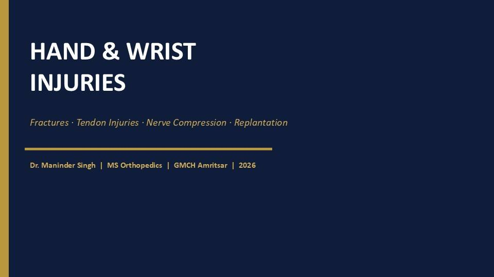
HAND & WRIST
- Fractures · Tendon Injuries · Nerve Compression · Replantation
- Dr. Maninder Singh | MS Orthopedics | GMCH Amritsar | 2026
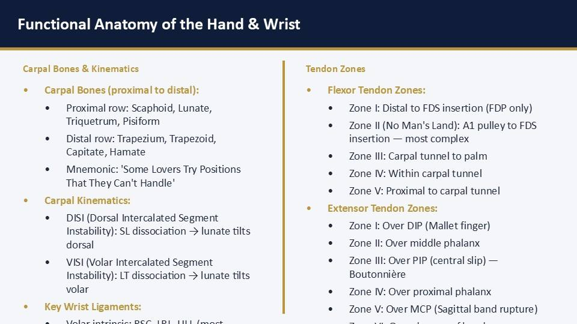
Functional Anatomy of the Hand & Wrist
- Carpal Bones & Kinematics
- Carpal Bones (proximal to distal):
- Proximal row: Scaphoid, Lunate, Triquetrum, Pisiform
- Distal row: Trapezium, Trapezoid, Capitate, Hamate
- Mnemonic: 'Some Lovers Try Positions That They Can't Handle'
- Carpal Kinematics:
- DISI (Dorsal Intercalated Segment Instability): SL dissociation → lunate tilts dorsal
- VISI (Volar Intercalated Segment Instability): LT dissociation → lunate tilts volar
- Key Wrist Ligaments:
- Volar intrinsic: RSC, LRL, ULL (most important)
- Scapholunate ligament (SL): dorsal component most important
- Lunotriquetral ligament (LT)
- TFCC: stabilises DRUJ; torn in distal radius fractures
- Tendon Zones
- Flexor Tendon Zones:
- Zone I: Distal to FDS insertion (FDP only)
- Zone II (No Man's Land): A1 pulley to FDS insertion — most complex
- Zone III: Carpal tunnel to palm
- Zone IV: Within carpal tunnel
- Zone V: Proximal to carpal tunnel
- Extensor Tendon Zones:
- Zone I: Over DIP (Mallet finger)
- Zone II: Over middle phalanx
- Zone III: Over PIP (central slip) — Boutonnière
- Zone IV: Over proximal phalanx
- Zone V: Over MCP (Sagittal band rupture)
- Zone VI: Over dorsum of hand
- Zone VII: Under extensor retinaculum
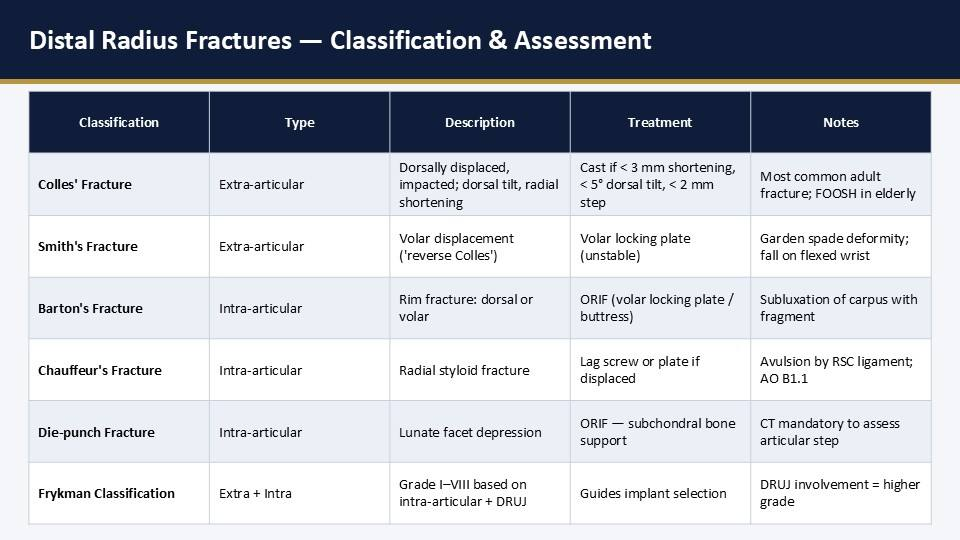
Distal Radius Fractures — Classification & Assessment
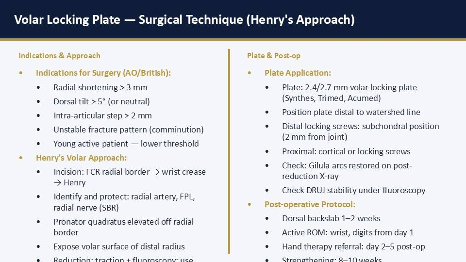
Volar Locking Plate — Surgical Technique (Henry's Approach)
- Indications & Approach
- Indications for Surgery (AO/British):
- Radial shortening > 3 mm
- Dorsal tilt > 5° (or neutral)
- Intra-articular step > 2 mm
- Unstable fracture pattern (comminution)
- Young active patient — lower threshold
- Henry's Volar Approach:
- Incision: FCR radial border → wrist crease → Henry
- Identify and protect: radial artery, FPL, radial nerve (SBR)
- Pronator quadratus elevated off radial border
- Expose volar surface of distal radius
- Reduction: traction + fluoroscopy; use reduction tools
- Plate & Post-op
- Plate Application:
- Plate: 2.4/2.7 mm volar locking plate (Synthes, Trimed, Acumed)
- Position plate distal to watershed line
- Distal locking screws: subchondral position (2 mm from joint)
- Proximal: cortical or locking screws
- Check: Gilula arcs restored on post-reduction X-ray
- Check DRUJ stability under fluoroscopy
- Post-operative Protocol:
- Dorsal backslab 1–2 weeks
- Active ROM: wrist, digits from day 1
- Hand therapy referral: day 2–5 post-op
- Strengthening: 8–10 weeks
- Full recovery: 3–6 months
- Complications: tendon rupture (EPL), CRPS (5%)
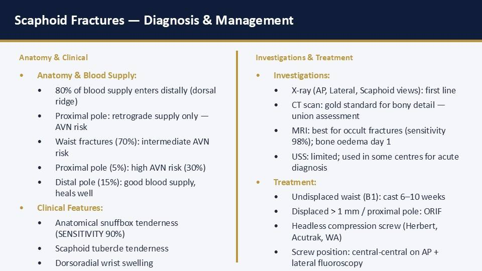
Scaphoid Fractures — Diagnosis & Management
- Anatomy & Clinical
- Anatomy & Blood Supply:
- 80% of blood supply enters distally (dorsal ridge)
- Proximal pole: retrograde supply only — AVN risk
- Waist fractures (70%): intermediate AVN risk
- Proximal pole (5%): high AVN risk (30%)
- Distal pole (15%): good blood supply, heals well
- Clinical Features:
- Anatomical snuffbox tenderness (SENSITIVITY 90%)
- Scaphoid tubercle tenderness
- Dorsoradial wrist swelling
- Axial compression (scaphoid compression test)
- X-ray: may be normal in 10–20% acute fractures
- Investigations & Treatment
- Investigations:
- X-ray (AP, Lateral, Scaphoid views): first line
- CT scan: gold standard for bony detail — union assessment
- MRI: best for occult fractures (sensitivity 98%); bone oedema day 1
- USS: limited; used in some centres for acute diagnosis
- Treatment:
- Undisplaced waist (B1): cast 6–10 weeks
- Displaced > 1 mm / proximal pole: ORIF
- Headless compression screw (Herbert, Acutrak, WA)
- Screw position: central-central on AP + lateral fluoroscopy
- Delayed union: bone graft (iliac crest / medial femoral condyle vascularised graft)
- AVN proximal pole: vascularised bone graft (Zaidemberg / MFC)
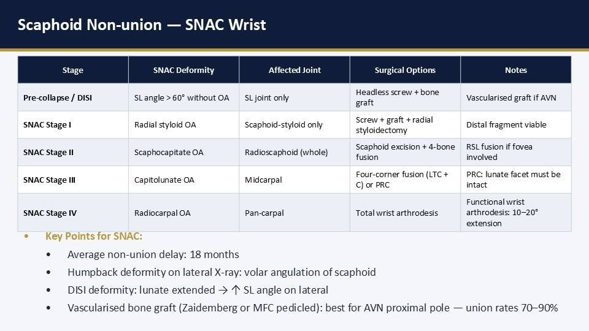
Scaphoid Non-union — SNAC Wrist
- Key Points for SNAC:
- Average non-union delay: 18 months
- Humpback deformity on lateral X-ray: volar angulation of scaphoid
- DISI deformity: lunate extended → ↑ SL angle on lateral
- Vascularised bone graft (Zaidemberg or MFC pedicled): best for AVN proximal pole — union rates 70–90%
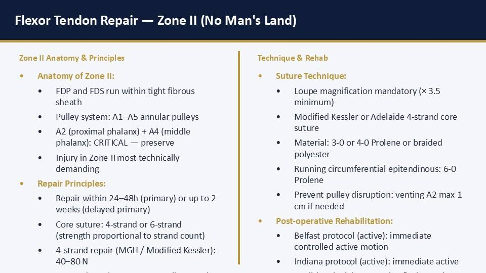
Flexor Tendon Repair — Zone II (No Man's Land)
- Zone II Anatomy & Principles
- Anatomy of Zone II:
- FDP and FDS run within tight fibrous sheath
- Pulley system: A1–A5 annular pulleys
- A2 (proximal phalanx) + A4 (middle phalanx): CRITICAL — preserve
- Injury in Zone II most technically demanding
- Repair Principles:
- Repair within 24–48h (primary) or up to 2 weeks (delayed primary)
- Core suture: 4-strand or 6-strand (strength proportional to strand count)
- 4-strand repair (MGH / Modified Kessler): 40–80 N
- 6-strand repair: 60–120 N — allows early active motion
- Epitendinous suture: increases strength 10–50%, reduces gapping
- Technique & Rehab
- Suture Technique:
- Loupe magnification mandatory (× 3.5 minimum)
- Modified Kessler or Adelaide 4-strand core suture
- Material: 3-0 or 4-0 Prolene or braided polyester
- Running circumferential epitendinous: 6-0 Prolene
- Prevent pulley disruption: venting A2 max 1 cm if needed
- Post-operative Rehabilitation:
- Belfast protocol (active): immediate controlled active motion
- Indiana protocol (active): immediate active
- Traditional: Kleinert passive flexion-active extension (wrist flex)
- Hand therapist: from day 2–5 mandatory
- Rupture rate: 3–5% with active protocols vs 10–25% passive
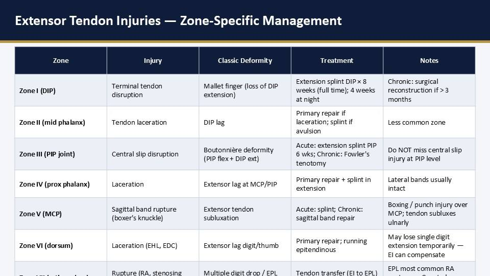
Extensor Tendon Injuries — Zone-Specific Management
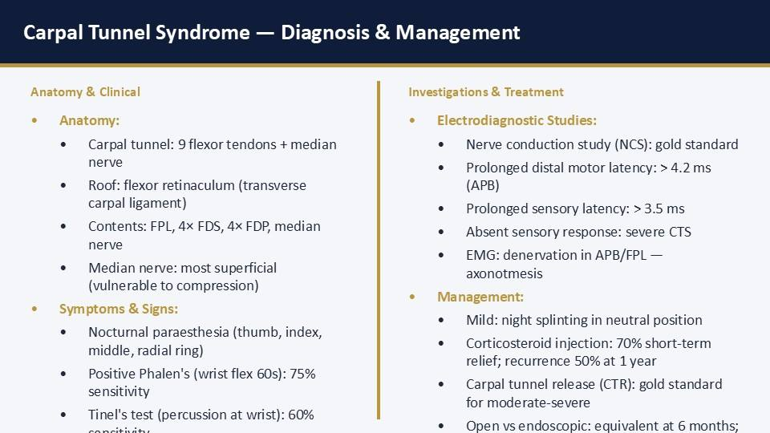
Carpal Tunnel Syndrome — Diagnosis & Management
- Anatomy & Clinical
- Anatomy:
- Carpal tunnel: 9 flexor tendons + median nerve
- Roof: flexor retinaculum (transverse carpal ligament)
- Contents: FPL, 4× FDS, 4× FDP, median nerve
- Median nerve: most superficial (vulnerable to compression)
- Symptoms & Signs:
- Nocturnal paraesthesia (thumb, index, middle, radial ring)
- Positive Phalen's (wrist flex 60s): 75% sensitivity
- Tinel's test (percussion at wrist): 60% sensitivity
- Durkan's carpal compression test: 87% sensitivity
- Thenar wasting: late feature — intrinsic hand muscle weakness
- Flick sign: patient shakes hand to relieve symptoms
- Investigations & Treatment
- Electrodiagnostic Studies:
- Nerve conduction study (NCS): gold standard
- Prolonged distal motor latency: > 4.2 ms (APB)
- Prolonged sensory latency: > 3.5 ms
- Absent sensory response: severe CTS
- EMG: denervation in APB/FPL — axonotmesis
- Management:
- Mild: night splinting in neutral position
- Corticosteroid injection: 70% short-term relief; recurrence 50% at 1 year
- Carpal tunnel release (CTR): gold standard for moderate-severe
- Open vs endoscopic: equivalent at 6 months; endoscopic faster return to work (1–2 wks)
- CTR under wide-awake LA: WALANT technique — patient can test immediately
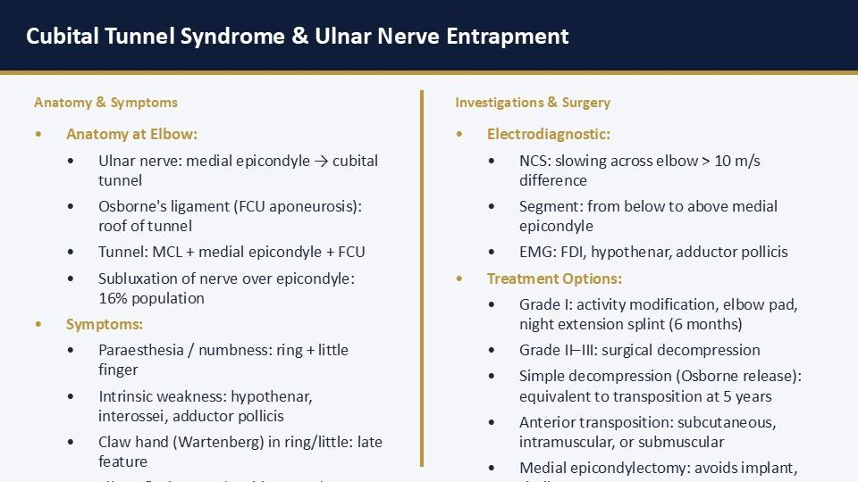
Cubital Tunnel Syndrome & Ulnar Nerve Entrapment
- Anatomy & Symptoms
- Anatomy at Elbow:
- Ulnar nerve: medial epicondyle → cubital tunnel
- Osborne's ligament (FCU aponeurosis): roof of tunnel
- Tunnel: MCL + medial epicondyle + FCU
- Subluxation of nerve over epicondyle: 16% population
- Symptoms:
- Paraesthesia / numbness: ring + little finger
- Intrinsic weakness: hypothenar, interossei, adductor pollicis
- Claw hand (Wartenberg) in ring/little: late feature
- Elbow flexion test (positive > 60s): 75% sensitivity
- McGowan classification: Grade I (sensory only) → III (wasting)
- Investigations & Surgery
- Electrodiagnostic:
- NCS: slowing across elbow > 10 m/s difference
- Segment: from below to above medial epicondyle
- EMG: FDI, hypothenar, adductor pollicis
- Treatment Options:
- Grade I: activity modification, elbow pad, night extension splint (6 months)
- Grade II–III: surgical decompression
- Simple decompression (Osborne release): equivalent to transposition at 5 years
- Anterior transposition: subcutaneous, intramuscular, or submuscular
- Medial epicondylectomy: avoids implant, similar outcomes
- Endoscopic decompression: shorter recovery, good for Grade I–II
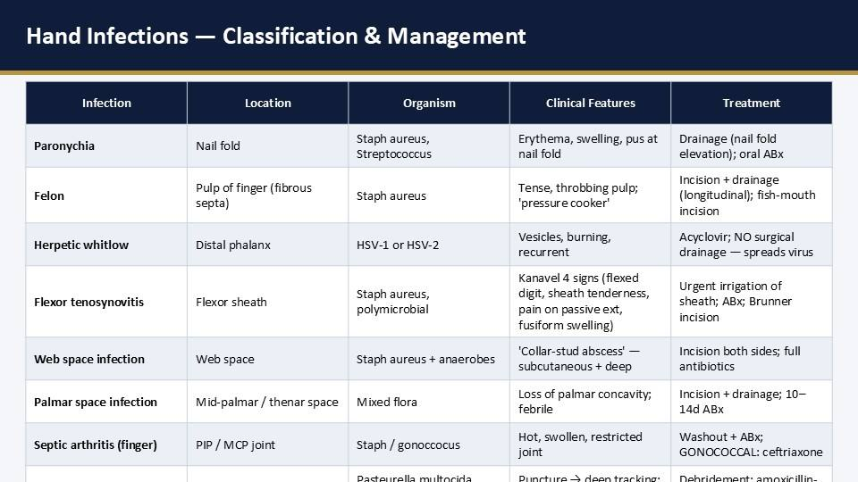
Hand Infections — Classification & Management
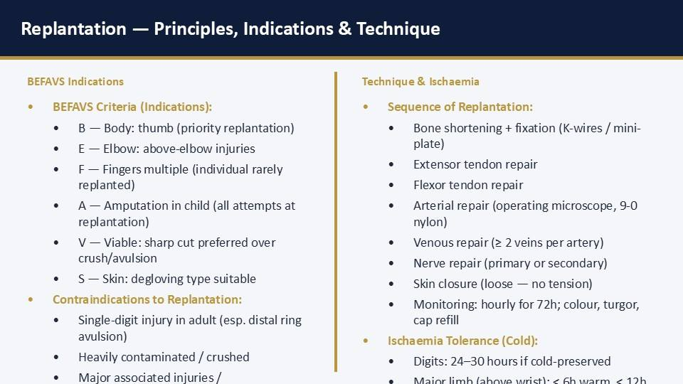
Replantation — Principles, Indications & Technique
- BEFAVS Indications
- BEFAVS Criteria (Indications):
- B — Body: thumb (priority replantation)
- E — Elbow: above-elbow injuries
- F — Fingers multiple (individual rarely replanted)
- A — Amputation in child (all attempts at replantation)
- V — Viable: sharp cut preferred over crush/avulsion
- S — Skin: degloving type suitable
- Contraindications to Replantation:
- Single-digit injury in adult (esp. distal ring avulsion)
- Heavily contaminated / crushed
- Major associated injuries / haemodynamic instability
- Prolonged warm ischaemia: > 12h fingers, > 6h major limb
- Technique & Ischaemia
- Sequence of Replantation:
- Bone shortening + fixation (K-wires / mini-plate)
- Extensor tendon repair
- Flexor tendon repair
- Arterial repair (operating microscope, 9-0 nylon)
- Venous repair (≥ 2 veins per artery)
- Nerve repair (primary or secondary)
- Skin closure (loose — no tension)
- Monitoring: hourly for 72h; colour, turgor, cap refill
- Ischaemia Tolerance (Cold):
- Digits: 24–30 hours if cold-preserved
- Major limb (above wrist): < 6h warm, < 12h cold
- Wrap in moist gauze, place in sealed bag on ice (NOT direct ice)
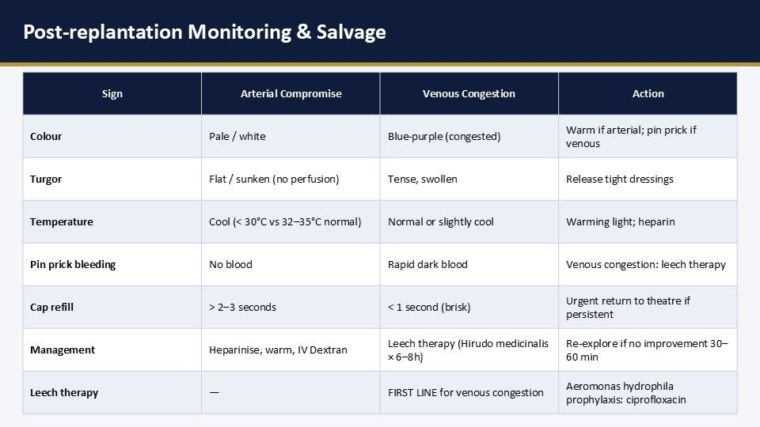
Post-replantation Monitoring & Salvage
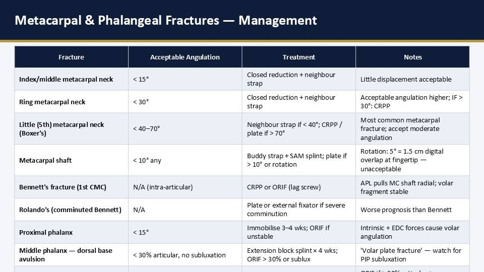
Metacarpal & Phalangeal Fractures — Management
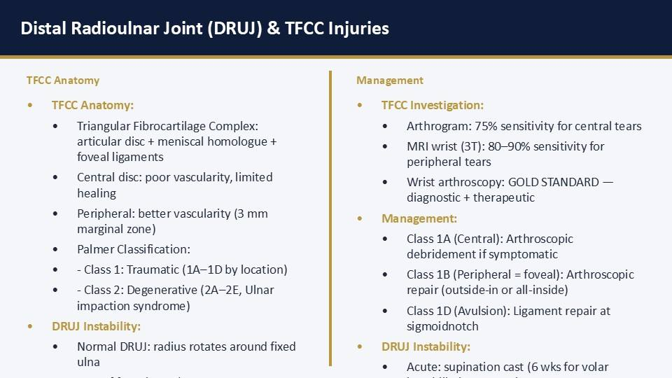
Distal Radioulnar Joint (DRUJ) & TFCC Injuries
- TFCC Anatomy
- TFCC Anatomy:
- Triangular Fibrocartilage Complex: articular disc + meniscal homologue + foveal ligaments
- Central disc: poor vascularity, limited healing
- Peripheral: better vascularity (3 mm marginal zone)
- Palmer Classification:
- - Class 1: Traumatic (1A–1D by location)
- - Class 2: Degenerative (2A–2E, Ulnar impaction syndrome)
- DRUJ Instability:
- Normal DRUJ: radius rotates around fixed ulna
- Tear of foveal attachment → DRUJ unstable
- Test: Piano-key sign (dorsal pressure on ulnar head)
- Stabilising structures: volar + dorsal radioulnar ligaments (deep fibers)
- Management
- TFCC Investigation:
- Arthrogram: 75% sensitivity for central tears
- MRI wrist (3T): 80–90% sensitivity for peripheral tears
- Wrist arthroscopy: GOLD STANDARD — diagnostic + therapeutic
- Management:
- Class 1A (Central): Arthroscopic debridement if symptomatic
- Class 1B (Peripheral = foveal): Arthroscopic repair (outside-in or all-inside)
- Class 1D (Avulsion): Ligament repair at sigmoidnotch
- DRUJ Instability:
- Acute: supination cast (6 wks for volar instability) or pronation
- Surgical: TFCC foveal reattachment (open / arthroscopic)
- Chronic: ECU-based ligament reconstruction
- Ulnar shortening osteotomy: for Palmer Class 2 (impaction)
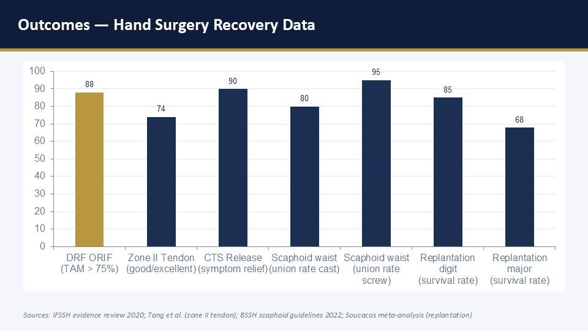
Outcomes — Hand Surgery Recovery Data
Sources: IFSSH evidence review 2020; Tang et al. (zone II tendon); BSSH scaphoid guidelines 2022; Soucacos meta-analysis (replantation)
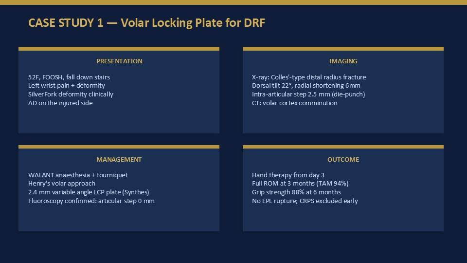
CASE STUDY 1 — Volar Locking Plate for DRF
- PRESENTATION
- 52F, FOOSH, fall down stairs
- Left wrist pain + deformity
- SilverFork deformity clinically
- AD on the injured side
- IMAGING
- X-ray: Colles'-type distal radius fracture
- Dorsal tilt 22°, radial shortening 6mm
- Intra-articular step 2.5 mm (die-punch)
- CT: volar cortex comminution
- MANAGEMENT
- WALANT anaesthesia + tourniquet
- Henry's volar approach
- 2.4 mm variable angle LCP plate (Synthes)
- Fluoroscopy confirmed: articular step 0 mm
- OUTCOME
- Hand therapy from day 3
- Full ROM at 3 months (TAM 94%)
- Grip strength 88% at 6 months
- No EPL rupture; CRPS excluded early
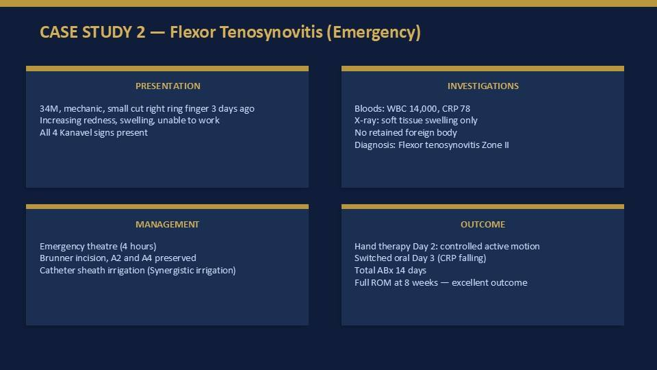
CASE STUDY 2 — Flexor Tenosynovitis (Emergency)
- PRESENTATION
- 34M, mechanic, small cut right ring finger 3 days ago
- Increasing redness, swelling, unable to work
- All 4 Kanavel signs present
- INVESTIGATIONS
- Bloods: WBC 14,000, CRP 78
- X-ray: soft tissue swelling only
- No retained foreign body
- Diagnosis: Flexor tenosynovitis Zone II
- MANAGEMENT
- Emergency theatre (4 hours)
- Brunner incision, A2 and A4 preserved
- Catheter sheath irrigation (Synergistic irrigation)
- OUTCOME
- Hand therapy Day 2: controlled active motion
- Switched oral Day 3 (CRP falling)
- Total ABx 14 days
- Full ROM at 8 weeks — excellent outcome
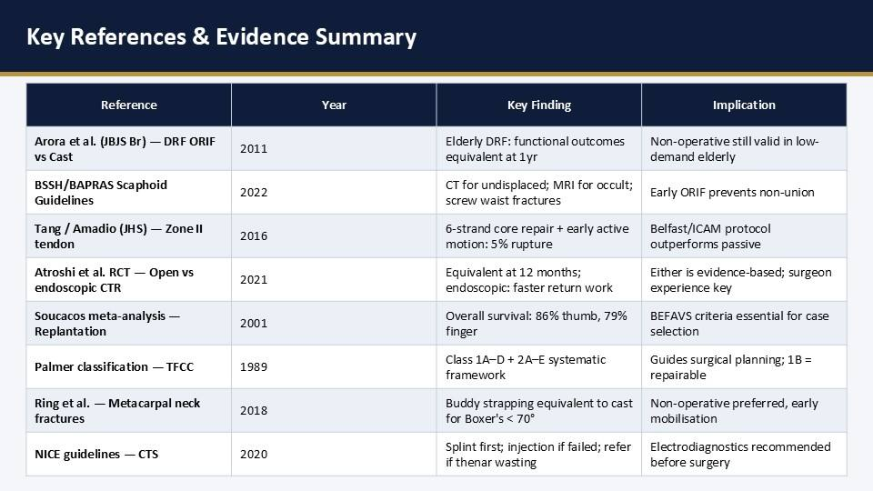
Key References & Evidence Summary
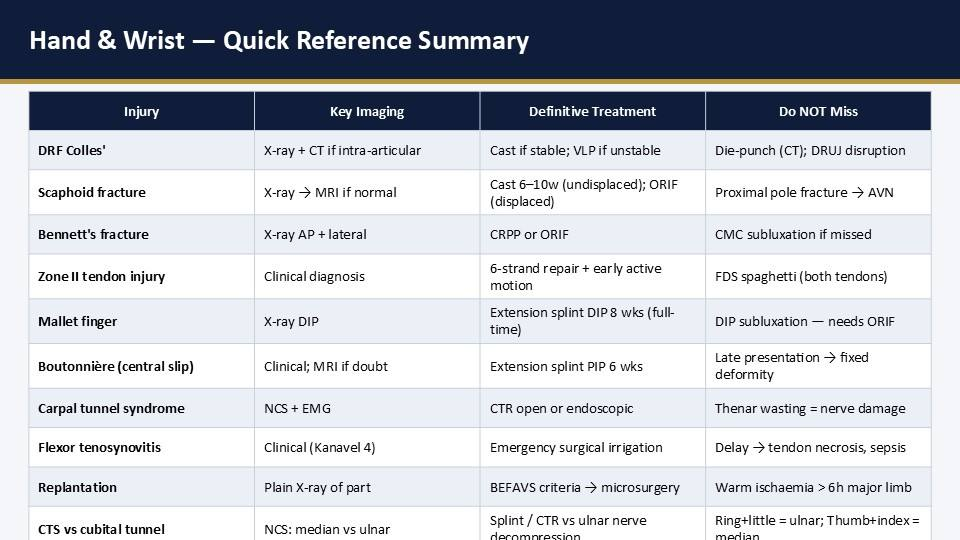
Hand & Wrist — Quick Reference Summary
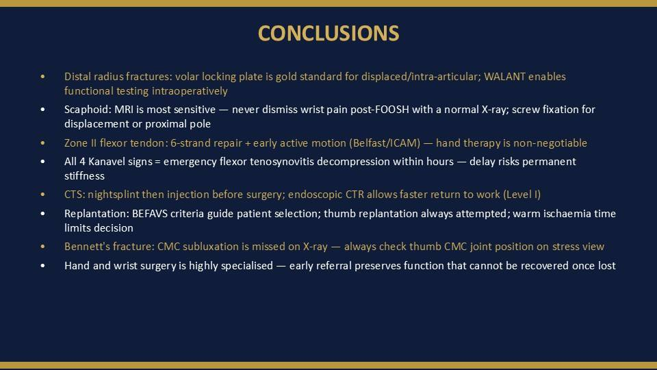
CONCLUSIONS
- Distal radius fractures: volar locking plate is gold standard for displaced/intra-articular; WALANT enables functional testing intraoperatively
- Scaphoid: MRI is most sensitive — never dismiss wrist pain post-FOOSH with a normal X-ray; screw fixation for displacement or proximal pole
- Zone II flexor tendon: 6-strand repair + early active motion (Belfast/ICAM) — hand therapy is non-negotiable
- All 4 Kanavel signs = emergency flexor tenosynovitis decompression within hours — delay risks permanent stiffness
- CTS: nightsplint then injection before surgery; endoscopic CTR allows faster return to work (Level I)
- Replantation: BEFAVS criteria guide patient selection; thumb replantation always attempted; warm ischaemia time limits decision
- Bennett's fracture: CMC subluxation is missed on X-ray — always check thumb CMC joint position on stress view
- Hand and wrist surgery is highly specialised — early referral preserves function that cannot be recovered once lost
Use this deck in your teaching
The original editable PowerPoint is free to download for non-commercial teaching, with credit to the author. Questions or corrections? Contact us.
About this deck
Prepared by Dr. Maninder Singh (MS Orthopaedics, Associate Professor, GMCH Amritsar) for postgraduate and clinical teaching. Where images are from open-licence sources (for example Wikimedia Commons), the licence and author appear on the slide. See our editorial policy. Educational use only — not medical advice; see Terms & Medical Disclaimer.